git 教程(1)
Git与Github
Git简要介绍
Git是目前世界上最先进的分布式版本控制系统。
什么是版本控制系统呢？
以平常工作为例，可能对于某一个项目，想删除一个段落，又怕将来想恢复找不回来怎么办？有办法，先把当前文件“另存为……”一个新的Word文件，再接着改，改到一定程度，再“另存为……”一个新文件，这样一直改下去。这样下去可能我们会关于一个项目有十几个版本。
过一段时间后，你想要找回被删除的内容，但是已经记不清删除前保存在哪个文件里了，只好一个一个文件去找。看着一堆乱七八糟的文件，想保留最新的一个，然后把其他的删掉，又怕哪天会用上，还不敢删。
更要命的是，有些部分需要你的财务同事帮助填写，于是你把文件Copy到U盘里给她（也可能通过Email发送一份给她），然后，你继续修改Word文件。一天后，同事再把Word文件传给你，此时，你必须想想，发给她之后到你收到她的文件期间，你作了哪些改动，得把你的改动和她的部分合并
于是你想，如果有一个软件，不但能自动帮我记录每次文件的改动，还可以让同事协作编辑，这样就不用自己管理一堆类似的文件了，也不需要把文件传来传去。如果想查看某次改动，只需要在软件里瞄一眼就可以，岂不是很方便？
这个软件的作用就是如此，记录一个文件的多个版本，且可以记录是谁记录的？是什么时候记录的？更改的内容是什么？等等。
这样，你就结束了手动管理多个“版本”的史前时代，进入到版本控制的20世纪。
安装Git
本文此处仅介绍windows版本的安装方法。
方法一：直接从Git官网下载安装程序，然后自行选择选项安装即可。
搜索Git - https://git-scm.com/ -> “Install for Windows”
点进后，显示如图页面，直接点击箭头处内容下载即可。默认选择默认安装路径即可，如若想更改路径，务必使用英文路径

默认编辑器我们推荐选择VSCode：


后续建议直接选择默认选项即可，如果想要知道其选项具体含义，可以前往以下网站：
一般来说，我们只要在开始菜单或者桌面找到Git Bash，点击后蹦出一个如图的命令行窗口，就可以说明Git安装成功了。
Github
我们先简单理解一下Github是什么，其作用是什么？
简单来说，GitHub 是一个专门用来存放、管理和分享代码的网站。你可以把它理解成“程序员的网盘 + 代码版本管理工具 + 开源社区”。
假如你在steam上玩过游戏这点就更好理解了，前面的git能够帮我们在本地存档，就好像你玩游戏的存档一样，记录了你存档的时候什么时间，有什么具体信息，做了什么。
而Github就是steam云状态，他把你退出游戏以后最后保存的那个存档存到云端上，这样就能保证，只要你账号是对的，在别的地方你也可以打开这个存档了。
因此，我们需要一个Github账号，将其与我们的Git绑定，这样我们就可以进行我们项目上传了。
首先先进入Github，如果进不去，可以使用Watt toolkit这类软件，如果有更好的就更好了，这边就不做推荐了:)
然后自己进行注册即可。下图就是已经注册成功，你可以自己改动一些个性化内容：
配置Git
我们安装完Git的第一步，就是给我们记录一个名字和Email地址：
git config --global user.name "Your Name"
git config --global user.email "email@example.com"其中的名字和邮箱按理说可以随意取，但是如果你想关联到自己的Github账号的话，将邮箱与Github的邮箱保持一致。
且后面想要查看自己的信息，可以使用:
git config --global --list后面想要更改名字与邮箱再设置一次即可，但是修改后只影响未来的新commit。以前已经提交的 commit 里的作者信息不会自动改变。
注意git config命令的--global参数，用了这个参数，表示你这台机器上所有的Git仓库都会使用这个配置，当然也可以对某个仓库指定不同的用户名和Email地址。只要进入对应文件夹，使用前面的设置代码即可。
本地创建版本库
什么是版本库呢？版本库又名仓库（Repository），你可以简单理解成一个目录，这个目录里面的所有文件都可以被Git管理起来，每个文件的修改、删除，Git都能跟踪，以便任何时刻都可以追踪历史，或者在将来某个时刻可以“还原”。
- 创建空目录
先选择一个合适的地方，创建一个空目录，可以手动建立，也可以进入某个目标文件夹使用mkdir xxxx
然后使用cd xxxx进入我们新建的文件夹。
可以使用pwd,显示当前目录。
- 把目录变成Git可以管理的仓库
我们可以通过git init来执行这个事情,输入即可,可能输出如下：
$ git init
Initialized empty Git repository in /Users/michael/xxxx/.git/瞬间Git就把仓库建好了，而且告诉你是一个空的仓库（empty Git repository），细心的读者可以发现当前目录下多了一个.git的目录，这个目录是Git来跟踪管理版本库的，没事千万不要手动修改这个目录里面的文件，不然改乱了，就把Git仓库给破坏了。
如果你没有看到.git目录，那是因为这个目录默认是隐藏的，用ls -ah命令就可以看见。
git init：

这边我们已经初始化过了，就不演示了，现在的界面是已经初始化过后的情况。
把文件添加到版本库
版本控制系统可以告诉你每次的改动，比如在第5行加了一个单词“Linux”，在第8行删了一个单词“Windows”。而图片、视频这些二进制文件，虽然也能由版本控制系统管理，但没法跟踪文件的变化，只能把二进制文件每次改动串起来，也就是只知道图片从100KB改成了120KB，但到底改了啥，版本控制系统不知道，也没法知道。
不幸的是，Microsoft的Word格式是二进制格式，因此，版本控制系统是没法跟踪Word文件的改动的，前面我们举的例子只是为了演示，如果要真正使用版本控制系统，就要以纯文本方式编写文件。
因为文本是有编码的，比如中文有常用的GBK编码，日文有Shift_JIS编码，如果没有历史遗留问题，强烈建议使用标准的UTF-8编码，所有语言使用同一种编码，既没有冲突，又被所有平台所支持。
使用Windows的童鞋要特别注意：千万不要使用Windows自带的记事本编辑任何文本文件。原因是Microsoft开发记事本的团队使用了一个非常弱智的行为来保存UTF-8编码的文件，他们自作聪明地在每个文件开头添加了0xefbbbf（十六进制）的字符，你会遇到很多不可思议的问题，比如，网页第一行可能会显示一个“?”，明明正确的程序一编译就报语法错误，等等，都是由记事本的弱智行为带来的。建议你下载Visual Studio Code代替记事本，不但功能强大，而且免费！
现在，我们可以编写一个readme.txt文件，内容随意。
一定要放到learngit目录下（子目录也行），因为这是一个Git仓库，放到其他地方Git再厉害也找不到这个文件。
和把大象放到冰箱需要3步相比，把一个文件放到Git仓库只需要两步。
第一步，用命令git add告诉Git，把文件添加到仓库:
$ git add readme.txt执行上面的命令，没有任何显示，这就对了，Unix的哲学是“没有消息就是好消息”，说明添加成功。
第二步，用命令git commit告诉Git，把文件提交到仓库：
$ git commit -m "wrote a readme file"
[master (root-commit) eaadf4e] wrote a readme file
1 file changed, 2 insertions(+)
create mode 100644 readme.txt简单解释一下git commit命令，-m后面输入的是本次提交的说明，可以输入任意内容，当然最好是有意义的，这样你就能从历史记录里方便地找到改动记录。
嫌麻烦不想输入-m “xxx”行不行？确实有办法可以这么干，但是强烈不建议你这么干，因为输入说明对自己对别人阅读都很重要。实在不想输入说明的童鞋请自行Google，我不告诉你这个参数。
git commit命令执行成功后会告诉你，1 file changed：1个文件被改动（我们新添加的readme.txt文件）；2 insertions：插入了两行内容（readme.txt有两行内容）。
如果嫌麻烦，可以直接使用git add .，这样就不用考虑暂存哪个文件了。
当然，前面都是使用终端的指令，我们现在讲一下如何用VScode执行这些操作：
如图打开对应界面
git add 与git commit这两个指令了， 红色方框内可输入的位置，即本次提交的说明，与前文一致。 成功后如下图所示：

就可以显示改动的时间，人，以及备注等内容
如果我们随便增加一些内容，再次commit后，我们点击第二次的save内容，我们可以看到此次更改的内容：
可以自行尝试，多试几次就明白啦:)
我们可以使用git log来看这几次的本地更新状况：
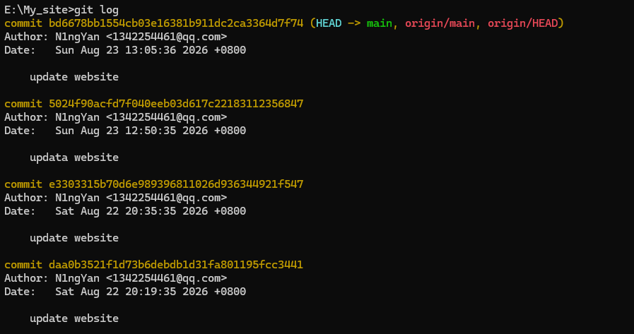
github远程提交
此处，我们可以先在github上创建一个新的项目：
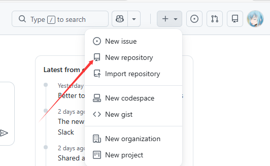

红框处可以设置自己的项目名称与是否可见。
如图就是创建好的：
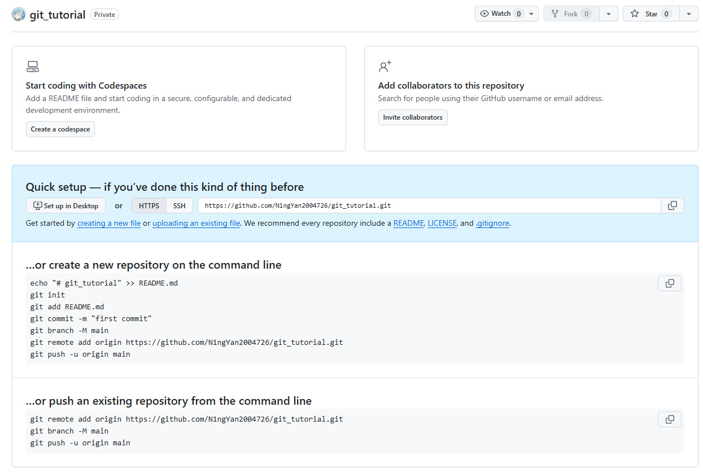
我们就可以把本地的文件push到Github上了：
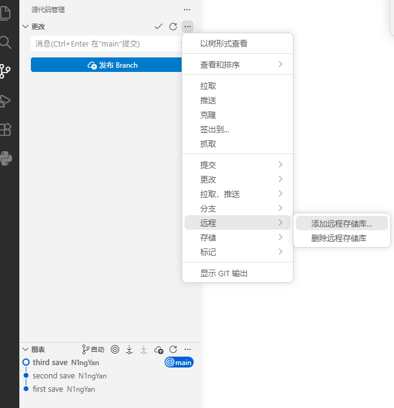
记得按照VScode的提示来
最后我们回到github上就可以看到更新后的内容了：
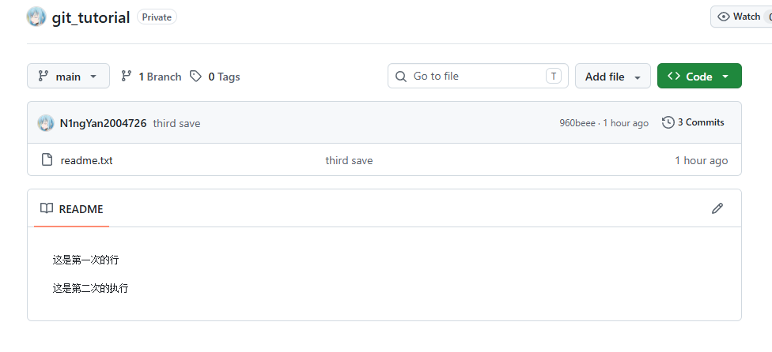
以上内容就完整介绍了一遍，如何下载Git与创建自己的Github账号，以及如何将本地文件push到Github上去，这是我们学习的第一步。
时光机穿梭
此后部分都是使用Bash指令的情况,如果想要使用VSCode的话,可以自行探索,VSCode的情况一般都比较简单.
我们如果更改了我们仓库内的文件,即如上面说的,使用git status可以让我们时刻掌握仓库当前的状态,假设输出的结果是这样的:
$ git status
On branch master
Changes not staged for commit:
(use "git add <file>..." to update what will be committed)
(use "git checkout -- <file>..." to discard changes in working directory)
modified: readme.txt
no changes added to commit (use "git add" and/or "git commit -a")这上面的命令输出就是告诉我们,readme.txt以及被修改过了,但还没有准备提交的修改.这时候,我们可以使用git diff来查看difference，显示的格式正是Unix通用的diff格式.
$ git diff readme.txt
diff --git a/readme.txt b/readme.txt
index 46d49bf..9247db6 100644
--- a/readme.txt
+++ b/readme.txt
@@ -1,2 +1,2 @@
-Git is a version control system.
+Git is a distributed version control system.
Git is free software.可以从上面的命令输出看到，我们在第一行添加了一个distributed单词。
我们就可以使用git add与git commmit来更新了,仅仅add的时候是不会更新的,两步都走完以后,再使用git status,我们一般可以获得以下输出:
$ git status
On branch master
nothing to commit, working tree cleanGit告诉我们当前没有需要提交的修改，而且，工作目录是干净（working tree clean）的。
版本回退
我们前面的每一次commit都相当于是一次游戏的存档,如果你现在把游戏玩烂了,还可以通过读取存档复活(SL犬你们赢了).
当然了，在实际工作中，我们脑子里怎么可能记得一个几千行的文件每次都改了什么内容，不然要版本控制系统干什么。版本控制系统肯定有某个命令可以告诉我们历史记录，在Git中，我们用git log命令查看，前面介绍VSCode的时候唯一讲述的一条命令：
$ git log
commit 1094adb7b9b3807259d8cb349e7df1d4d6477073 (HEAD -> master)
Author: Michael Liao <askxuefeng@gmail.com>
Date: Fri May 18 21:06:15 2018 +0800
append GPL
commit e475afc93c209a690c39c13a46716e8fa000c366
Author: Michael Liao <askxuefeng@gmail.com>
Date: Fri May 18 21:03:36 2018 +0800
add distributed
commit eaadf4e385e865d25c48e7ca9c8395c3f7dfaef0
Author: Michael Liao <askxuefeng@gmail.com>
Date: Fri May 18 20:59:18 2018 +0800
wrote a readme filegit log命令显示从最近到最远的提交日志，我们可以看到3次提交，最近的一次是append GPL，上一次是add distributed，最早的一次是wrote a readme file。
如果嫌输出信息太多，看得眼花缭乱的，可以试试加上--pretty=oneline参数：
$ git log --pretty=oneline
1094adb7b9b3807259d8cb349e7df1d4d6477073 (HEAD -> master) append GPL
e475afc93c209a690c39c13a46716e8fa000c366 add distributed
eaadf4e385e865d25c48e7ca9c8395c3f7dfaef0 wrote a readme file这些数字就是版本号
好了，假如我们现在觉得append GPL版本不太行，我们要回退到add distributed这个版本，怎么做呢？
首先，Git必须知道当前版本是哪个版本，在Git中，用HEAD表示当前版本，也就是最新的提交1094adb…（注意我的提交ID和你的肯定不一样），上一个版本就是HEAD^，上上一个版本就是HEAD^^，当然往上100个版本写100个^比较容易数不过来，所以写成HEAD~100。
现在，我们要把当前版本append GPL回退到上一个版本add distributed，就可以使用git reset命令：
$ git reset --hard HEAD^
HEAD is now at e475afc add distributed--hard参数有啥意义？--hard会回退到上个版本的已提交状态，而--soft会回退到上个版本的未提交状态，--mixed会回退到上个版本已添加但未提交的状态。现在，先放心使用--hard。
我们这个时候看我们的历史git log:
$ git log
commit e475afc93c209a690c39c13a46716e8fa000c366 (HEAD -> master)
Author: Michael Liao <askxuefeng@gmail.com>
Date: Fri May 18 21:03:36 2018 +0800
add distributed
commit eaadf4e385e865d25c48e7ca9c8395c3f7dfaef0
Author: Michael Liao <askxuefeng@gmail.com>
Date: Fri May 18 20:59:18 2018 +0800
wrote a readme file最新的那个版本append GPL已经看不到了！好比你从21世纪坐时光穿梭机来到了19世纪，想再回去已经回不去了，肿么办？
办法其实还是有的，只要上面的命令行窗口还没有被关掉，你就可以顺着往上找啊找啊，找到那个append GPL的commit id是1094adb...，于是就可以指定回到未来的某个版本：
$ git reset --hard 1094a
HEAD is now at 83b0afe append GPL这样我们就可以又回来了。
Git的版本回退速度非常快，因为Git在内部有个指向当前版本的HEAD指针，当你回退版本的时候，Git仅仅是把HEAD从指向append GPL：
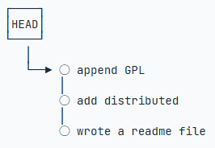
改为指向
add distributed：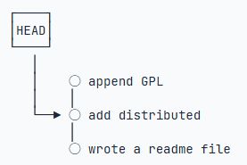
现在，你回退到了某个版本，关掉了电脑，第二天早上就后悔了，想恢复到新版本怎么办？找不到新版本的commit id怎么办？
在Git中，总是有后悔药可以吃的。当你用$ git reset --hard HEAD^回退到add distributed版本时，再想恢复到append GPL，就必须找到append GPL的commit id。Git提供了一个命令git reflog用来记录你的每一次命令：
$ git reflog
e475afc HEAD@{1}: reset: moving to HEAD^
1094adb (HEAD -> master) HEAD@{2}: commit: append GPL
e475afc HEAD@{3}: commit: add distributed
eaadf4e HEAD@{4}: commit (initial): wrote a readme file终于舒了口气，从输出可知，append GPL的commit id是1094adb，现在，你又可以乘坐时光机回到未来了。
工作区与暂存区
工作区(Working Directory)：
就是你在电脑里能看到的目录，比如我的learngit文件夹就是一个工作区：
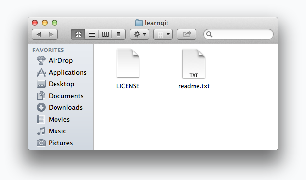
版本库(Repository)：
工作区有一个隐藏目录.git，这个不算工作区，而是Git的版本库。
Git的版本库里存了很多东西，其中最重要的就是称为stage（或者叫index）的暂存区，还有Git为我们自动创建的第一个分支master，以及指向master的一个指针叫HEAD。
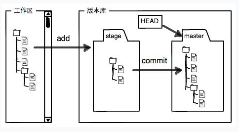
分支和HEAD的概念我们以后再讲。
前面讲了我们把文件往Git版本库里添加的时候，是分两步执行的：
第一步是用git add把文件添加进去，实际上就是把文件修改添加到暂存区；
第二步是用git commit提交更改，实际上就是把暂存区的所有内容提交到当前分支。
因为我们创建Git版本库时，Git自动为我们创建了唯一一个main分支(此处要看我们安装Git的时候的设置)，所以，现在，git commit就是往main分支上提交更改。
你可以简单理解为，需要提交的文件修改通通放到暂存区，然后，一次性提交暂存区的所有修改。
此处,我们先对readme.txt做个修改,比如加上一行内容:
Git is a distributed version control system.
Git is free software distributed under the GPL.
Git has a mutable index called stage.然后，在工作区新增一个LICENSE文本文件（内容随便写）。
先用git status查看一下状态：
$ git status
On branch master
Changes not staged for commit:
(use "git add <file>..." to update what will be committed)
(use "git checkout -- <file>..." to discard changes in working directory)
modified: readme.txt
Untracked files:
(use "git add <file>..." to include in what will be committed)
LICENSE
no changes added to commit (use "git add" and/or "git commit -a")Git非常清楚地告诉我们，readme.txt被修改了，而LICENSE还从来没有被添加过，所以它的状态是Untracked。
现在，使用两次命令git add，把readme.txt和LICENSE都添加后，用git status再查看一下：
$ git status
On branch master
Changes to be committed:
(use "git reset HEAD <file>..." to unstage)
new file: LICENSE
modified: readme.txt现在，暂存区的状态就变成这样了：
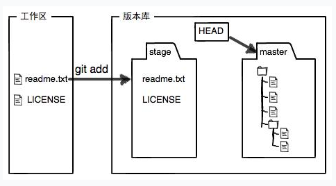
所以，git add命令实际上就是把要提交的所有修改放到暂存区（Stage），然后，执行git commit就可以一次性把暂存区的所有修改提交到分支。
一旦提交后，如果你又没有对工作区做任何修改，那么工作区就是“干净”的,这就是我们前面提到的
现在版本库变成了这样，暂存区就没有任何内容了：
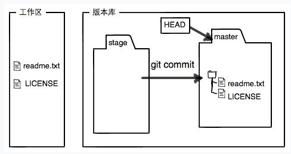
管理修改
我们可以理解为,Git跟踪并管理的是修改，而非文件.
假设现在的流程是:
第一次改动 ->git add->第二次修改-> git commit
结果就是,我们main分支下的内容其实是第一次改动之后的内容,而不是第二次修改.
我们前面讲了，Git管理的是修改，当你用git add命令后，在工作区的第一次修改被放入暂存区，准备提交，但是，在工作区的第二次修改并没有放入暂存区，所以，git commit只负责把暂存区的修改提交了，也就是第一次的修改被提交了，第二次的修改不会被提交。
那怎么提交第二次修改呢？你可以继续git add再git commit，也可以别着急提交第一次修改，先git add第二次修改，再git commit，就相当于把两次修改合并后一块提交了.
每次修改，如果不用git add到暂存区，那就不会加入到commit中。
撤销修改
自然，你是不会犯错的。不过现在是凌晨两点，你正在赶一份工作报告，你在readme.txt中添加了一行：
Git is a distributed version control system.
Git is free software distributed under the GPL.
Git has a mutable index called stage.
Git tracks changes of files.
My stupid boss still prefers SVN.在你准备提交前，一杯咖啡起了作用，你猛然发现了stupid boss可能会让你丢掉这个月的奖金！
既然错误发现得很及时，就可以很容易地纠正它。你可以删掉最后一行，手动把文件恢复到上一个版本的状态。如果用git status查看一下：
$ git status
On branch master
Changes not staged for commit:
(use "git add <file>..." to update what will be committed)
(use "git checkout -- <file>..." to discard changes in working directory)
modified: readme.txt
no changes added to commit (use "git add" and/or "git commit -a")你可以发现，Git会告诉你，git checkout -- file可以丢弃工作区的修改：
$ git checkout -- readme.txt命令git checkout -- readme.txt意思就是，把readme.txt文件在工作区的修改全部撤销，这里有两种情况：
一种是readme.txt自修改后还没有被放到暂存区，现在，撤销修改就回到和版本库一模一样的状态；
一种是readme.txt已经添加到暂存区后，又作了修改，现在，撤销修改就回到添加到暂存区后的状态。
总之，就是让这个文件回到最近一次git commit或git add时的状态。
现在，看看readme.txt的文件内容：
Git is a distributed version control system.
Git is free software distributed under the GPL.
Git has a mutable index called stage.
Git tracks changes of files.文件内容果然复原了。
但是如果我们已经add到了stage. 庆幸的是，在commit之前，你发现了这个问题。用git status查看一下，修改只是添加到了暂存区，还没有提交：
$ git status
On branch master
Changes to be committed:
(use "git reset HEAD <file>..." to unstage)
modified: readme.txtGit同样告诉我们，用命令git reset HEAD <file>可以把暂存区的修改撤销掉（unstage），重新放回工作区：
$ git reset HEAD readme.txt
Unstaged changes after reset:
M readme.txtgit reset命令既可以回退版本，也可以把暂存区的修改回退到工作区。当我们用HEAD时，表示最新的版本。
再用git status查看一下，现在暂存区是干净的，工作区有修改：
$ git status
On branch master
Changes not staged for commit:
(use "git add <file>..." to update what will be committed)
(use "git checkout -- <file>..." to discard changes in working directory)
modified: readme.txt现在，假设你不但改错了东西，还从暂存区提交到了版本库，怎么办呢？还记得版本回退一节吗？可以回退到上一个版本。不过，这是有条件的，就是你还没有把自己的本地版本库推送到远程。还记得Git是分布式版本控制系统吗？我们后面会讲到远程版本库，一旦你把stupid boss提交推送到远程版本库，你就真的惨了……
小结： 1. 当你改乱了工作区某个文件的内容，想直接丢弃工作区的修改时，用命令git checkout -- file。 2. 当你不但改乱了工作区某个文件的内容，还添加到了暂存区时，想丢弃修改，分两步，第一步用命令git reset HEAD <file>，就回到了场景1，第二步按场景1操作。 3. 已经提交了不合适的修改到版本库时，想要撤销本次提交，参考版本回退一节，不过前提是没有推送到远程库。
删除文件
在Git中，删除也是一个修改操作，我们实战一下，先添加一个新文件test.txt到Git并且提交：
$ git add test.txt
$ git commit -m "add test.txt"
[master b84166e] add test.txt
1 file changed, 1 insertion(+)
create mode 100644 test.txt一般情况下，你通常直接在文件管理器中把没用的文件删了.
这个时候，Git知道你删除了文件，因此，工作区和版本库就不一致了，git status命令会立刻告诉你哪些文件被删除了：
$ git status
On branch master
Changes not staged for commit:
(use "git add/rm <file>..." to update what will be committed)
(use "git checkout -- <file>..." to discard changes in working directory)
deleted: test.txt
no changes added to commit (use "git add" and/or "git commit -a")现在你有两个选择，一是确实要从版本库中删除该文件，那就用命令git rm删掉，并且git commit：
$ git rm test.txt
rm 'test.txt'
$ git commit -m "remove test.txt"
[master d46f35e] remove test.txt
1 file changed, 1 deletion(-)
delete mode 100644 test.txt现在，文件就从版本库中被删除了。
tips:先手动删除文件，然后使用git rm <file>和git add<file>效果是一样的。因为现在已经是空的了
另一种情况是删错了，因为版本库里还有呢，所以可以很轻松地把误删的文件恢复到最新版本：
$ git checkout -- test.txt无论工作区是修改还是删除，都可以“一键还原”。
远程仓库
此处部分内容我们前面已经讲的足够详细了，我只会补充一些新的点。
因为GitHub需要识别出你推送的提交确实是你推送的，而不是别人冒充的，而Git支持SSH协议，所以，GitHub只要知道了你的公钥，就可以确认只有你自己才能推送。 因此以下我们来介绍一下如何获取。
第一步：创建SSH Key。在用户主目录下，看看有没有.ssh目录，如果有，再看看这个目录下有没有id_rsa和id_rsa.pub这两个文件，如果已经有了，可直接跳到下一步。如果没有，打开Shell（Windows下打开Git Bash），创建SSH Key：
$ ssh-keygen -t rsa -C "youremail@example.com"你需要把邮件地址换成你自己的邮件地址，然后一路回车，使用默认值即可，由于这个Key也不是用于军事目的，所以也无需设置密码。
如果一切顺利的话，可以在用户主目录里找到.ssh目录，里面有id_rsa和id_rsa.pub两个文件，这两个就是SSH Key的秘钥对，id_rsa是私钥，不能泄露出去，id_rsa.pub是公钥，可以放心地告诉任何人。
第二步：登录你的Github，找到settings -> Access -> SSH and GPC keys 到达该界面：
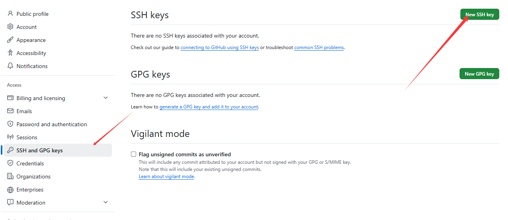
然后，点“new SSH Key”，填上任意Title，在Key文本框里粘贴id_rsa.pub文件的内容即可。
当然，GitHub允许你添加多个Key。假定你有若干电脑，你一会儿在公司提交，一会儿在家里提交，只要把每台电脑的Key都添加到GitHub，就可以在每台电脑上往GitHub推送了。
如果添加的时候地址写错了，或者就是想删除远程库，可以用git remote rm <name>命令。使用前，建议先用git remote -v查看远程库信息：
$ git remote -v
origin git@github.com:michaelliao/learn-git.git (fetch)
origin git@github.com:michaelliao/learn-git.git (push)然后，根据名字删除，比如删除origin：
$ git remote rm origin此处的“删除”其实是解除了本地和远程的绑定关系，并不是物理上删除了远程库。远程库本身并没有任何改动。要真正删除远程库，需要登录到GitHub，在后台页面找到删除按钮再删除。
从远程库克隆
上次我们讲了先有本地库，后有远程库的时候，如何关联远程库。
现在，假设我们从零开发，那么最好的方式是先创建远程库，然后，从远程库克隆。
首先，登陆GitHub，创建一个新的仓库，名字叫gitskills, 我们勾选Initialize this repository with a README，这样GitHub会自动为我们创建一个README.md文件。创建完毕后，可以看到README.md文件
现在，远程库已经准备好了，下一步是用命令git clone克隆一个本地库：
$ git clone git@github.com:michaelliao/gitskills.git
Cloning into 'gitskills'...
remote: Counting objects: 3, done.
remote: Total 3 (delta 0), reused 0 (delta 0), pack-reused 3
Receiving objects: 100% (3/3), done.注意把Git库的地址换成你自己的，然后进入gitskills目录看看，已经有README.md文件了：
$ cd gitskills
$ ls
README.md如果有多个人协作开发，那么每个人各自从远程克隆一份就可以了。 Git支持多种协议，包括https，但ssh协议速度最快。